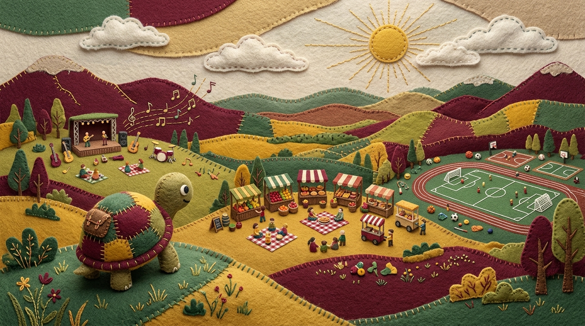
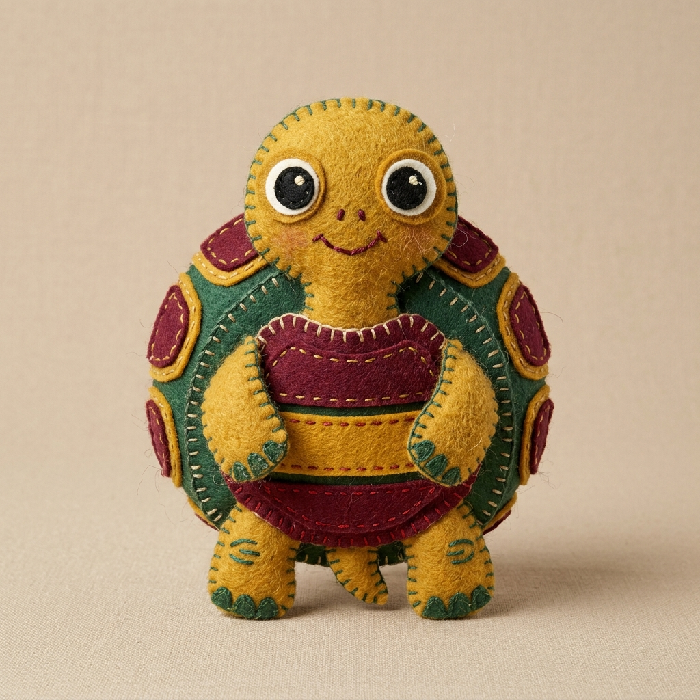
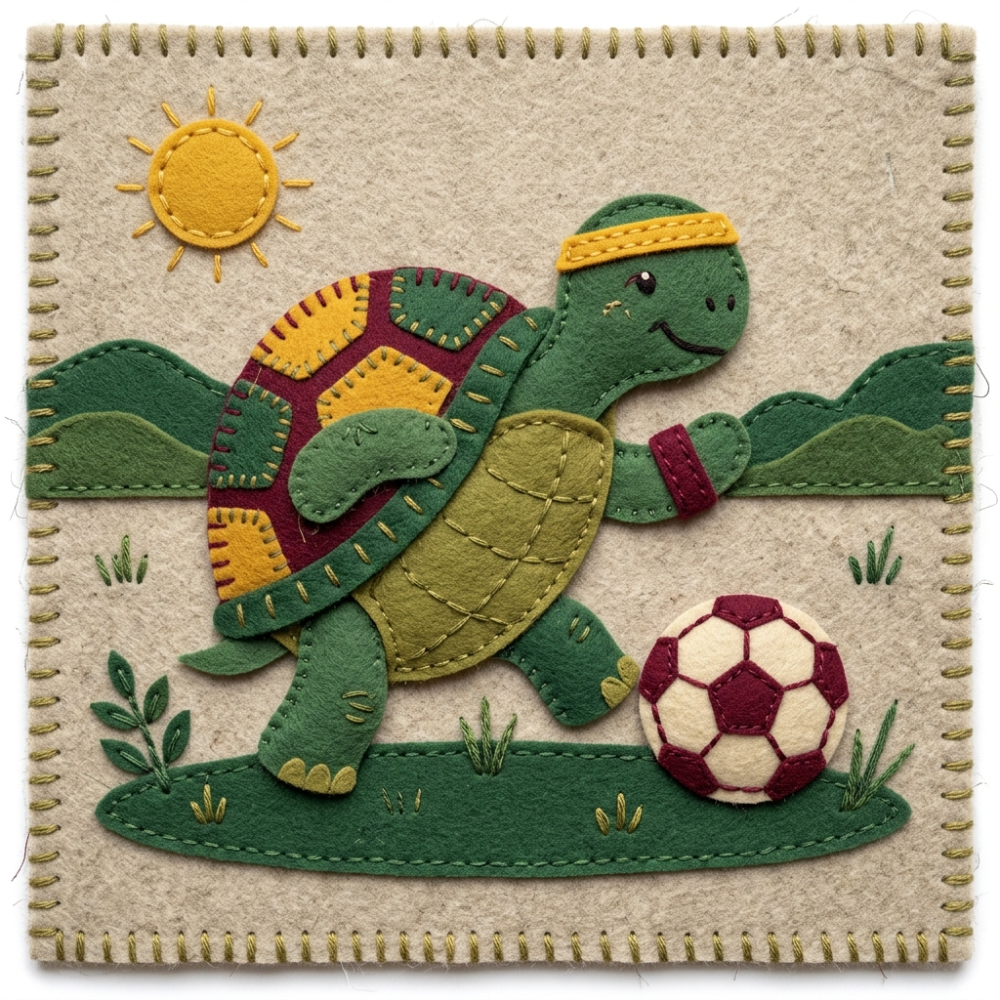

Müzik
Ritimler ve melodilerle üretmek, zihnimi dinlendiren ve yaratıcılığımı besleyen en önemli tutkularımdan biri.

Yazılım, tasarım ve yaratıcı üretim tutkusuyla dijital dünyada sade ve özgün deneyimler inşa ediyorum.

Merhaba, ben Doğu; yazılım geliştirme ve yaratıcı dijital projeler üretme konusunda tutkuluyum. Projelerimde hem sade hem de işlevsel ve estetik kullanıcı deneyimleri sunmaya odaklanıyorum. Sürekli yeni teknolojiler öğrenerek kendimi geliştirmeyi ve dijital dünyada kalıcı izler bırakmayı seviyorum.
Ritimler ve melodilerle üretmek, zihnimi dinlendiren ve yaratıcılığımı besleyen en önemli tutkularımdan biri.

Düzenli hareket etmek, sporun getirdiği disiplin ve dinamizm hem bedensel hem zihinsel odaklanmamı güçlendiriyor.

Farklı lezzetler keşfetmek ve mutfakta yeni tarifler denemek benim için keyifli bir üretkenlik alanı.
Yeni projeler, iş birlikleri veya sadece merhaba demek için aşağıdaki bağlantılardan bana ulaşabilirsiniz: